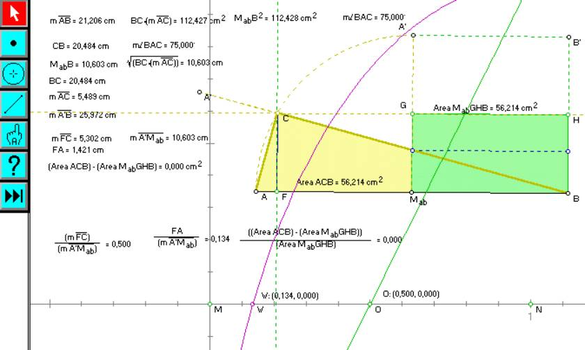
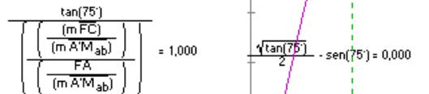

Problema
60
Construya
un triángulo rectángulo con hipotenusa dada tal que la mitad de la longitud de
la misma sea la media geométrica de sus catetos.
Solución de la profesora Liliana Saidon Centro Babbage Buenos Aires Argentina
Empiezo por construir el planteo:
-
El segmento AB será la hipotenusa del triángulo en cuestión
-
Marco Mab que es el punto medio de AB
-
Trazo AA´ que es el arco capaz de contener el vértice C del
ángulo recto de ABC, el triángulo rectángulo que busco
Como sé que la mitad de la hipotenusa al cuadrado debe ser
igual al producto de los catetos:
-
Trazo el cuadrado BMabA´B´ de lado igual a la
mitad de la hipotenusa BMab
-
Trazo G y H que son puntos medios de B´ Mab y A´Mab
u respectivamente
-
Construyo el rectángulo BMabGH que mide la mitad
que BMabA´B´
... sé que el área del rectángulo verde en tanto igual a la
mitad de (BMab)2 debe ser igual al área del triángulo
rectángulo tentativo ABC cuya área es la mitad del producto de los catetos AC y
BC.

En la figura aparece toda una serie de medidas que he tomado
para dar pie a terminar de exponer el planteo:
-
Calculo la relación entre la altura FC del triángulo
rectángulo tentativo ABC y la de la mitad de la hipotenusa.
-
Idem entre FA y la mitad de la hipotenusa.
-
Idem entre la diferencia de las medidas de las áreas del
triángulo ABC y el rectángulo verde respecto del rectángulo verde (ACB - MabGHB)/
MabGHB que en el punto de solución debe dar cero.
-
Grafico como XY a FC/A'Mab vs. (ACB - MabGHB)/
MabGHB y obtengo el punto O (cuyas coordenadas mido) que me sirve de
base para trazar el lugar geométrico de O mientras C recorre el arco capaz
(trazo verde)
-
Grafico como XY a FA/A'Mab vs. (ACB - MabGHB)/
MabGHB y obtengo el punto W (cuyas coordenadas mido) que me sirve de
base para trazar el lugar geométrico de W mientras C recorre el arco capaz
(trazo lila)

Amplio la escala de coordenadas y tanteo con cuidado, desplazando el punto O por el lugar geométrico verde que le corresponde hasta que obtengo la solución: al mover O se va operando iterativamente sobre la construcción que responde dinámicamente al planteo.
Ahora someto los valores hallados a prueba analítica.
Efectivamente, los resultados analíticos son compatibles con los hallados por
construcción:
Suena, por escrito, mucho más complicado de lo que resulta
resolverlo gráficamente, operando sobre la construcción dinámica.